"나는 너희들 편이다" - Royal Affair (금괴왕 대통령 취임 기념 재업)
게시: 2017-05-10T20:54:25+09:00
전에 EBS에서 해주는 영화를 봤는데, 독특하게도 18세기 덴마크 왕실을 배경을 한 시대극이었습니다. 제목은 로열 어페어 (A Royal Affair. 덴마크 어로는 En kongelig affære) 그래서 왕실 치정극인가 싶었지요. 주인공은 007 카지노 로열에서 악당으로 나왔던 메즈 미켈슨이라고 덴마크 사람이더군요. 알고보니까 이 영화 자체가 덴마크 영화였습니다. 왕비, 즉 여주인공은 제이슨 본 최종편에서 젊고 똑똑한 CIA 사이버전 전문가로 나왔던 알리시아 비칸더(Alicia Vikander)였습니다.
이 영화 줄거리는 역사적 사실을 비교적 가감없이 그대로 따라 갑니다. 영국의 공주이자, 나중에 나폴레옹 전쟁을 치루어낸 조지 3세의 여동생인 캐롤라인 마틸다 (Caroline Matilda) 가 15세의 나이에 덴마크로 시집을 가서 크리스티안 7세 (Christian VII )의 여왕이 됩니다. 당시 크리스티안 7세도 결혼하던 1766년 1월에야 즉위를 한, 17살의 미성년 왕이었지요. 그런데 이 크리스티안 7세는 정신병이 좀 있어서 제대로 된 왕 노릇을 하지 못했습니다. 게다가 자신의 와이프인 캐롤라인을 좋아하지도 않았고 다른 여자들과 놀아나곤 했지요.
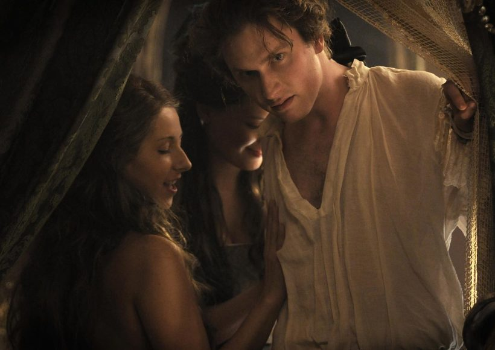
(이 양반이 크리스티안 7세... 저는 이 장면은 영화에서 못 봤습니다만, 이렇게 보니까 잘 생겼는데요 ?)
알고 보면 크리스티안 7세와 캐롤라인은 서로 사촌지간이었습니다. 크리스티안의 어머니인 루이즈는 캐롤라인의 이모였거든요. 당시 덴마크 뿐만이 아니라 영국 왕 조지 3세 본인도 정신병을 앓았는데, 이런 병력은 거듭되는 근친혼의 결과라는 주장도 있긴 합니다. 아무튼 어린 캐롤라인은 불행한 결혼 생활과 왕실 사정에 무척 상심이 컸고 인생의 낙도 없었습니다.
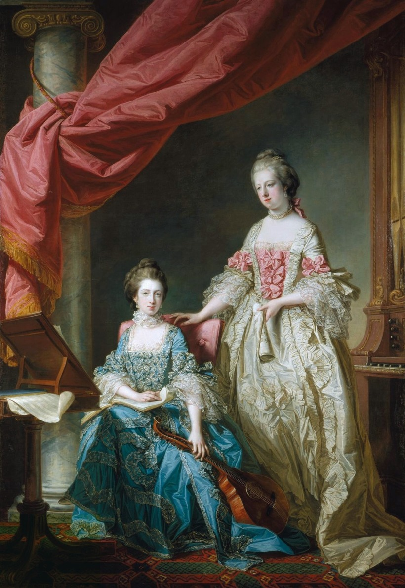
(오른쪽에 서있는 여자가 영국 공주 시절의 캐롤라인 공주입니다. 지긋지긋한 외모 지상주의를 버리지 못하고 여쭙습니다만... 누가 더 예쁜가요 ? 암만 봐도 왼쪽에 앉은 동생 루이자 공주가 훨씬 더 미인인데요 ? 불행히도 병약했던 루이자 공주는 불과 15세의 나이로 병사했습니다.)
이런 덴마크 왕실에 프로이센 출신의 의사 하나가 들어옵니다. 크리스티안 7세가 외국을 순방할 때 그를 모실 주치의를 채용했다가 마음에 들었는지 1769년 1월에 귀국할 때도 데려온 것이지요. 이 의사의 이름은 요한 스트루엔제 (Johann Friedrich Struensee), 왕비보다 14살 연상인 32세의 독신남이었습니다. 당시 사회에서 의사라는 직업은 글자 그대로 기술직종으로서, 귀족들에게는 하인 정도에 해당하는 위치였습니다. 이 양반은 지식을 쌓은 시민층답게, 당시 유럽 시민 사회에서 떠오르던 계몽사상에 심취해 있었습니다.
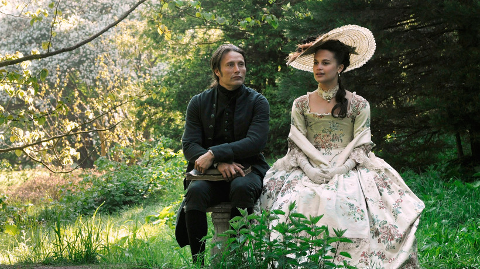
(스트루엔자와 캐롤라인 왕비의 건전했던 한때)
도도한 영국 공주이자 쓸쓸한 덴마크 왕비였던 캐롤라인은 바보 남편이 총애하던 이 무뚝뚝한 독일인 의사를 싫어했다고 합니다. 하지만 스트루엔제는 크리스티안에게 왕비를 저렇게 내버려두지 말라고 충언하는 등 국왕과 왕비의 관계 개선을 위해서 노력했고, 귀족들이 장악한 왕실에서 외로운 생활에 지친 왕비도 조금씩 이 총명하고 혁신적인 사상을 가진 외국인 의사에게 마음을 열게 되었습니다. 결국 이 둘은 1770년 봄 즈음에는 비밀스러운 연인 관계가 됩니다.
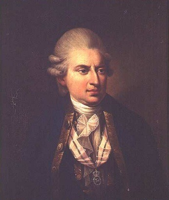
(실제 스트루엔제의 초상화입니다. 매즈 미켈슨도 미남은 아니지만, 그래도 이 양반에 비하면 매력남.)
캐롤라인 왕비와 스트루엔제는 낙후된 덴마크 사회에 대해 깊은 연민을 가지고 있었습니다. 영화 중반에 이런 장면이 나오지요. 왕비와 스트루엔제가 아직 연인으로 발전되기 전에, 시골길을 따라 말을 달리다가 울타리에 묶인 채 참혹하게 고문받다 죽은 어떤 농부의 시신을 발견합니다. 스트루엔제는 놀라는 왕비에게 덴마크의 법규상 지주는 세금을 내지 않는다든지 불경죄를 저지른 농노를 이런 식으로 마음대로 처벌할 수 있다고 말해주지요.
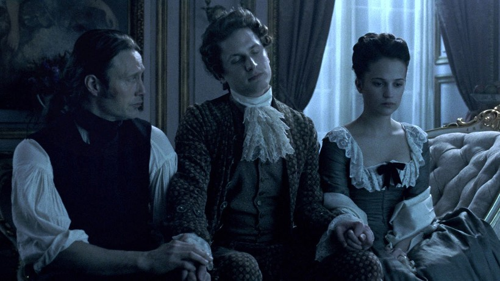
(불안한 삼각관계... 국왕은 별 애정도 없는 왕비보다는 스트루엔제를 훨씬 더 총애했습니다.)
이들은 이런 사회를 바꿀 수 있다고 믿었습니다. 왕비는 스트루엔제에게 '네가 국왕에 대해 가지는 영향력을 이용하라'고 조언하지요. 실제로 스트루엔제는 국왕 크리스티안에게 '전하가 훌륭한 업적을 이루는 사람이 될 수 있습니다' 라며 이런저런 사소한 개혁 조치를 권고하지요. 당시 덴마크의 실권은 귀족들의 연합체인 국무회의에 있었고, 왔다갔다 하는 정신병으로 인해 철없는 아이 또는 저능아 취급을 받던 국왕은 회의석 한쪽 구석에 찌그러져 있는 상태였습니다. 이런 상황에서 국왕은 스트루엔제에게 등을 떠밀려 떨리는 목소리로 '귀족들이 비용을 부담하여 코펜하겐 거리의 인분 등 오물을 청소하도록 하는 법안을 만들자' 라고 주장을 하고, 귀족들은 '저 병신이 왕 노릇하고 싶은 모양이다' 라고 코웃음을 치며 그 법안을 통과시켜 줍니다.
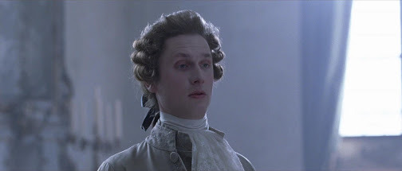
(영화 내내 크리스티안 7세는 미치광이보다는 주로 약간 천진난만한 저능아스럽게 나옵니다.)
이에 용기를 얻은 국왕과 스트루엔제는 점점 더 개혁적인 법안들을 하나씩 둘씩 통과시킵니다. 처음에는 멍청이 왕의 장난 정도로 여겼던 귀족들은 이런 법안들이 점점 자신들의 부와 권력을 갉아 먹자, 그 뒤에 스트루엔제가 있음을 마침내 파악하고, 외국인인 그를 원로 회의실에서 내치려 합니다. 하지만 이때 국왕이 용기를 내어 그를 제지하고 국무회의를 해산시킨 뒤, 스트루엔제에게 사실상 권력을 맡겨 버립니다. 사실 제대로 된 정권 이양이라고 볼 수는 없었지요. 이것이 1770년 9월 15일의 일이었고, 이때부터 약 16개월 동안 덴마크 역사상 "스트루엔제의 시대"라고 불리는 기간이 시작됩니다.
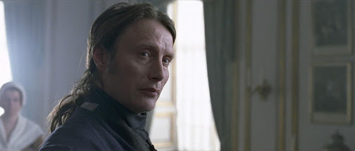
(이제 그의 독무대가 시작된다)
스트루엔제는 제대로 된 개혁을 하기 위해서는 귀족들이 장악한 국무회나 각 부서 장관직을 빼앗아야 한다고 판단하고는 이들 모두를 해직해버립니다. 그리고는 온갖 개혁 법안들을 공표하기 시작합니다. 권력을 잃기까지 약 2년 동안 그가 만들어 공표한 법안은 무려 1069개로서, 하루에 3개 꼴이었습니다. 법안 내용은 사실 괜찮은 편이었습니다. 가령 고문의 금지, 강제 노역제의 폐지, 언론 검열 폐지, 공직 및 세제에 있어서 귀족 특권의 폐지, 노예제의 폐지, 뇌물의 금지 및 형사 처벌, 농부들에게의 농토 할양, 곡물가 안정을 위한 국가 곡물 창고의 도입 등등이었지요. 이런 조치들은 유럽 사회 전역의 지식인들로부터 찬사를 이끌어 냈습니다. 스트루엔제와 왕비가 국왕에게 올라오는 이런저런 서류들을 처리하다가 그 유명한 볼테르로부터 덴마크의 선진 정치에 대해 '북방의 태양'이라며 찬사하는 편지를 받고는 서로 감격하여 말을 못하는 모습이 무척 인상적이었습니다.
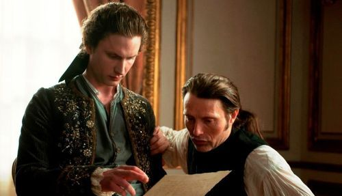
(국왕에게 정치 참여를 독려하는 스트루엔제)
문제는 귀족들이었습니다. 이런 법안들은 간단히 말해서 귀족들의 부와 권력을 제한하고 빼앗아 국민들에게 돌려준다는 것이었거든요. 당시 귀족들에게는 (당시에는 아직 그런 단어조차 없었겠습니다만) 완전 빨갱이 수작이었습니다. 그들은 조용히 반격을 준비합니다. 이미 스트루엔제와 왕비의 스캔달은 궁정에서 알 만한 사람들은 다 아는 이야기였거든요. 왕비가 외국에서 들어온 독일 의사 나부랭이와 붙어먹는다 ? 이건 독일에 대한 국민 감정이 나쁘던 덴마크 국민들에게 아주 잘 먹히는 재료였습니다. 영화 속에는 이렇게 반격 준비를 하던 귀족 하나가 이런 말을 하는 장면이 나오지요.
"역설적이게도, 스트루엔제를 공격할 아주 좋은 무기를 스트루엔제 본인이 우리들에게 쥐여주었습니다. 바로 검열의 폐지입니다."
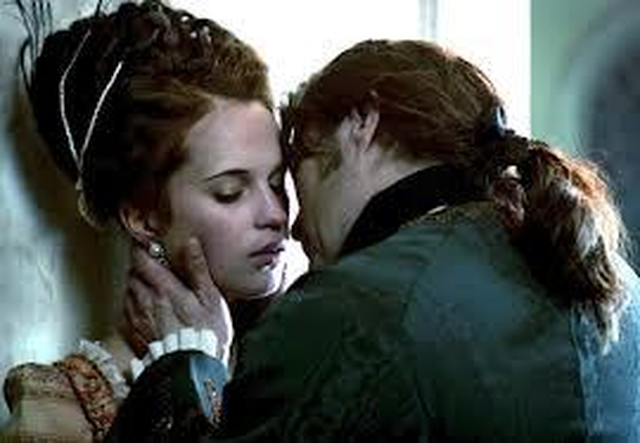
(쉴드를 쳐주려고 해도, 뭐 불륜은 불륜이쟎아요 ?)
귀족들은 사람을 풀어 스트루엔제와 왕비의 스캔달을 외설스럽고 노골적으로 묘사하고 비아냥거리는 출판물과 인형극의 형태로 민간에 퍼뜨립니다. 또한 스트루엔제가 외국인이라는 점을 공격하며, '어디서 굴러먹던 독일놈이 기어들어와 아름다운 덴마크의 관습법을 다 훼손하고 있다'며 덴마크의 국민 감정에 호소합니다. 스트루엔제와 그의 동지들은 검열을 다시 부활시킬 수도 없고 해서 속수무책으로 어쩔 줄 몰라합니다. 어쨌거나 스트루엔제와 왕비의 스캔달은 사실로서, 왕비가 낳은 딸인 아우구스타 (Louise Augusta) 공주는 스트루엔자의 딸임을 모두가, 심지어 국왕 크리스티안까지도 공공연히 말하고 다닐 정도였으니까요. 또 역사적으로도 스트루엔제의 개혁은 무척 어설픈 면이 꽤 많았습니다. 가령 스트루엔제 본인 자신도 덴마크 어는 한마디도 하지 못했고, 그가 귀족들을 내쫓고 임명한 자신의 심복들도 덴마크 현지 사정은 물론, 자신들이 수립해 갈 계몽주의 사회라는 것이 어떤 것인지 잘 모르는 인물들이었습니다.
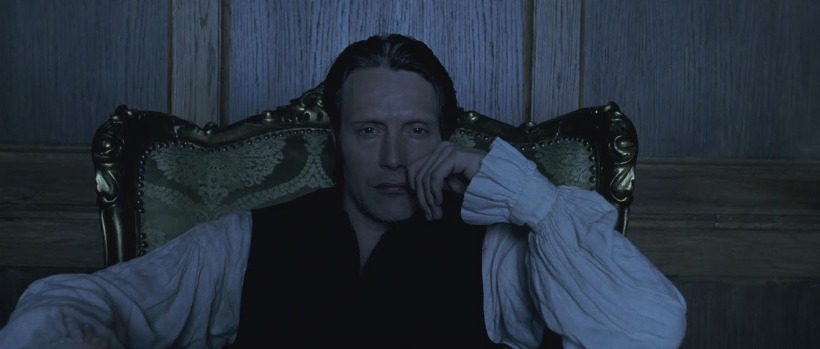
(뭔가 잘못되어가고 있는 것 같아)
이때 역사적으로는 어땠는지 모르겠으나, 영화 속에서는 이런 상황에서 국왕이 보여준 갈등 연기가 아주 일품이었습니다. 처음에 절친한 친구라고 생각했던 스트루엔제가 (비록 별 관심은 없었지만) 자신의 왕비와 놀아났다는 소문에 분노한 왕은 소란을 피우다가 스트루엔제 본인에게 단 둘이 있는 자리에서 사실 여부를 묻는데, 스트루엔제는 입에 침도 안 바르고 사실이 아니라고 단언합니다. 크리스티안 국왕도 반신반의하면서도 그를 받아들입니다. 그러나 결국 의심은 의심을 낳아, 궁정 식솔들이 다 같이 모여서 식사하는 자리에서 광기가 도져 '여기 이 프로이센 왕 (스트루엔제를 지칭)이 공주의 아빠이다' 라고 소리를 지르는 등 추태를 부리지요.
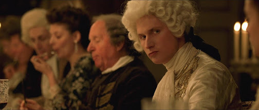
(아니 땐 굴뚝에 연기가 나겠는가)
이렇게 미쳐 날뛰는 크리스티안을 스트루엔제가 끌어앉고 '내가 실은 거짓말을 했다, 내 딸이 맞다' 라고 고백하자 크리스티안은 반쯤 흐느끼며 '그냥 우리 이렇게 지내자' 라고 애원하는 모습이 나옵니다. 이때 국왕이 보여준 모습은 병신스러우면서도 어딘가 애절한 면이 있는 것이, 아주 좋은 연기였다고 생각해요.
스트루엔제가 벌였던 여러가지 사회 사업, 가령 고아원의 설립이나 빈민 구제 등은 당연히 많은 돈을 필요로 했는데, 그는 귀족들에게 이런 비용을 부담시키다가 결국에는 '어차피 전쟁도 없는데'라며 상비군을 축소하면서까지 예산을 확보합니다. 이런 조치들은 사실 그의 빈약한 정권을 지지해줄 모든 세력을 적으로 돌리는 행위였습니다. 귀족파였던 태왕후 (크리스티안의 어머니)는 이런 점을 이용해, 왕실 경비대장을 자기 편으로 끌여들여 '반 스트루엔제' 폭동을 궁 내부로까지 끌어들이며 스트루엔제를 압박했습니다.
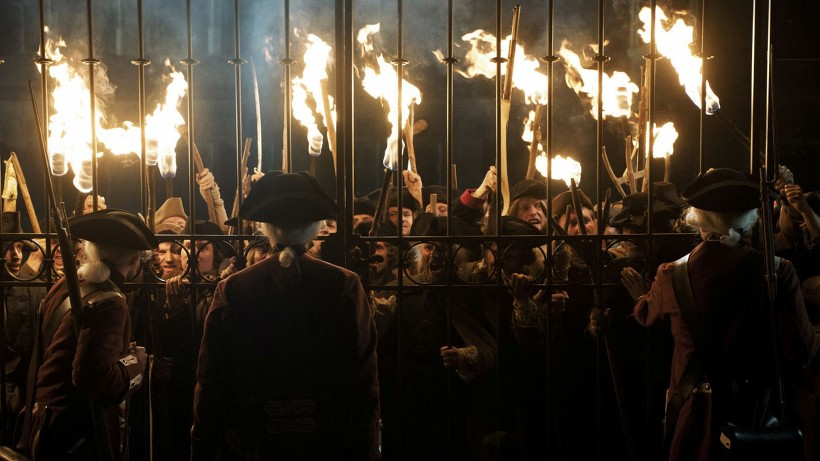
(박사모 애국지사들이 몰려와서 외국 불륜남은 물러가라고 시위하는데, 왕궁 경비병은 대장의 지시로 문을 열어주고...)
스트루엔제가 덴마크에 처음 왔을 때 그와 매우 친했던 귀족 하나가 이제 정권을 손에 쥔 스트루엔제에게 자신의 빚을 변제해달라고 부탁했으나, 이를 스트루엔제가 거절하면서 사이가 벌어졌는데, 귀족들은 그를 부추겨 스트루엔제가 반역을 모의했다고 누명을 씌우는데 성공합니다. 심약한 국왕 크리스티안은 한밤중에 자신의 침실로 쳐들어와 스트루엔제의 체포 명령서에 서명하라는 귀족들에게 끝까지 저항하지만, 결국 귀족들의 호통 속에 억지로 그의 체포 명령서에 서명을 하게 되지요. 그는 결국 다시 국무회의에서 한쪽 구석에 찌그러져 '거기 흑인 꼬마 시종하고나 노시오' 라는 조롱을 귀족들로부터 듣는 신세가 됩니다.
스트루엔제와 그의 동지들은 모두 체포되어 혹독한 고문에 시달립니다. 왕비 캐롤라이나도 공범으로 함께 체포되어 외딴 곳으로 유배됩니다. 스트루엔제를 눈에 가시처럼 여기던 귀족 하나는 스트루엔제가 갇힌 감방에 직접 들어와 스트루엔제가 고문 당하는 모습을 즐기면서 그에게 '이젠 법이 다시 원래대로 돌아가서 고문이 합법화 되었다' 며 비아냥거리지요.
오랫동안 고문에 시달린 스트루엔제가 뻗어있는 감방에 성직자 한명이 들어서자 '또 고문하러 왔구나' 라고 생각한 스트루엔제가 겁에 질려 비굴하게 감방 구석에 웅크리는 모습이 나오는데, 그 연기도 참 좋았어요. 스트루엔제를 안중근 같은 영웅으로 그린 것이 아니라, 육체적 고통에 굴복하는 평범한 인간으로 묘사했거든요. 스트루엔제의 아버지는 원래 목사였는데, 그의 아버지를 잘 안다는 이 성직자는 '모든 것을 시인하면 목숨은 살려주기로 했다'며 그에게 '왕비와의 불륜 및 반역 모의'를 시인하라고 설득하고, 스트루엔제는 결국 그에 동의합니다.
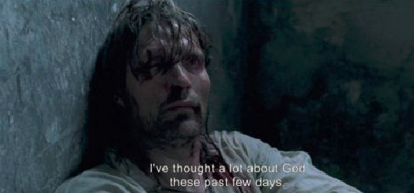
(매에는 장사가 없지요. 또 굶는데도 장사 없습니다.)
다음 장면에서, 스트루엔제는 깨끗한 셔츠 차림으로, 그의 개혁 동지였던 브란트와 함께 형장으로 가는 마차를 타고 갑니다. 함께 처형 직전에 사면 받기로 되어 있던 브란트는 '대체 왜 이렇게 형 집행 직전에야 사면을 해주는 것인지' 라며 투덜거리고 스트루엔제는 '그것이 덴마크의 전통이라는군' 이라고 설명하지요. 같은 시각, 크리스티안도 귀족들과 히히덕거리며 '내가 마지막 순간에 그를 사면해주면 스트루엔제가 무척 놀라면서 기뻐하겠지 ?' 라며 즐거워 합니다. 하지만 같은 마차를 타고 있던, 아버지의 친구라던 그 성직자가 십자가를 매만지며 안 좋은 표정을 짓는 것을 보고 스트루엔제는 '처형 직전 사면'이라는 것이 모두 거짓말이라는 것을 눈치챕니다. 그러나 브란트에게는 아무 말을 하지 않습니다. 이미 국왕의 명령은 안 통하는 세상이었거든요.
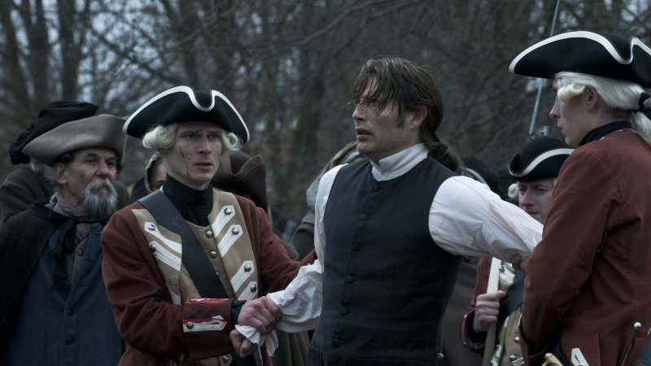
(나는 너희들 편이다.... 나는 너희들 편이다 !)
먼저 가벼운 마음으로 마차 밖으로 나가 높이 쌓아올린 단두대 (프랑스 식 길로틴이 아니라, 집행인이 큰 도끼를 든 구식 단두대)로 올라갔던 브란트가 먼저 처형된 후, 스트루엔제도 마차 밖으로 끌려나갑니다. 그가 나가니 단두대 주변을 둘러싼 덴마크 농민들이 그를 향해 돌과 채소 부스러기 등을 던지며 그를 조롱하기 시작합니다. 죽음의 공포와 수치심, 배신감 등에 몸을 떨며 스트루엔제가 군중들에게 '나는 너희들 편이다, 나는 너희들 편이다'라고 외쳐보지만, 군중들은 아랑곳하지 않습니다. 그는 브란트의 피에 젖은 단두대 계단에서 떨리는 무릎 때문에 넘어지기도 하면서 군중들을 더 즐겁게 해준 뒤, 결국 목이 잘립니다.
영화는 왕비가 이제 10대 청소년이 된 그녀의 자녀인 프레데릭 왕자와 아우구스타 공주에게 쓴 편지를 낭독하는 것을 배경을 끝이 납니다. 영화 속에서는 프레데릭 왕자와 아우구스타 공주가 왕비를 찾아가는 듯이 표현했습니다만, 사실 영화 속에서도 끝내 이들이 왕비와 직접 대면하는 장면은 나오지 않습니다. 캐롤라인 왕비는 스트루엔제가 처형된지 3년 후인 1775년 유배지에서 열병으로 사망했거든요. 그러니까 왕비가 그녀의 자녀들에게 쓴 편지는 역사적으로는 실제하지 않는 문서입니다. 아무튼 영화 속 그 편지에서, 왕비는 자신과 스트루엔제가 저지른 불륜에 대해 솔직히 고백하고, 그들이 더 나은 세상을 위한 개혁을 위해 가졌던 열정과 꿈을 토로합니다. 그리고 자막을 통해서, 결국 프레데릭 왕자가 쿠데타로 귀족들로부터 정권을 되찾고, 스트루엔제와 캐롤라인 왕비가 만들었던 개혁 법안들을 다시 부활시켰다는 것을 관객에게 알리면서 조용히 끝납니다.
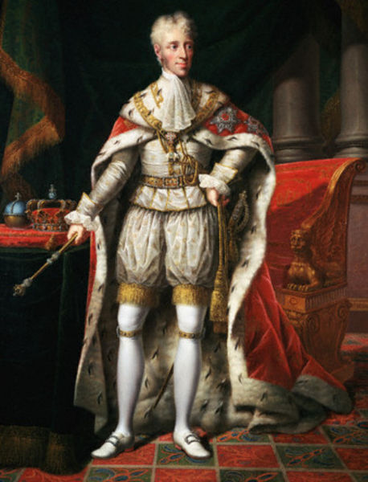
(프레데릭 6세입니다. 스트루엔제가 그의 어린 시절 훈육을 맡았지요. 이 양반이 덴마크 최초로 백신을 맞은 아기였는데, 그것 역시 스트루엔제가 놓아준 것이었습니다.)
실제 역사적으로도, 프레데릭 왕자는 아직 16살이던 1784년, 아직 정신병으로 투병 중이던 크리스티안 7세의 지원을 받아 쿠데타를 감행, 당시 섭정이던 그의 숙부와 할머니로 대표되는 귀족 연합체로부터 정권을 되찾고 섭정이 됩니다. 심약한 국왕이던 크리스티안 7세는 1808년에 59세의 나이로 죽었는데, 그때까지는 섭정으로, 그리고 그 이후에는 프레데릭 6세 국왕으로서 덴마크를 다스리지요. 그러니까 1801년의 제1차 코펜하겐 전투, 그리고 1807년 제2차 코펜하겐 전투 모두 이 왕자가 사실상의 국왕으로써 영국군과 싸웠던 것이지요. 그가 코펜하겐 성벽에서 넬슨의 영국 함대와 혈전을 벌이던 자국 해군을 응원하던 모습은 "중립도 힘이 있어야 한다 - 발트해의 포성" 편 http://blog.daum.net/nasica/6862508 을 참조하세요.
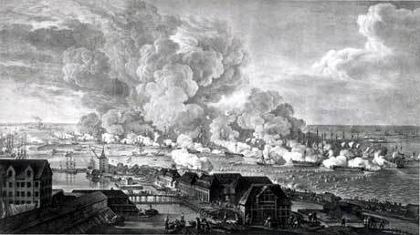
(아마 당시 왕세자의 눈에 들어왔을, 코펜하겐 시내에서 본 당시 전투 모습입니다. 포연에 가려 잘 보이지는 않아도 아무튼 왕세자를 포함한 코펜하겐 시민들에게는 무시무시한 모습이었을 겁니다.)
프레데릭 왕자는 스트루엔제조차 없애지 못했던 농노제를 1788년 마침내 폐지하는 등 진보사상으로 덴마크를 당대 제1의 계몽국가로 이끌었습니다. 하지만 나폴레옹 전쟁의 폭풍 속에서, 전혀 의도치 않게 그는 나폴레옹의 프랑스 측에 붙을 수 밖에 없었고, 결국 나폴레옹의 몰락과 함께 원래 덴마크 영토이던 노르웨이를 상실하는 등 많은 시련을 겪었습니다. 그러면서 전후 덴마크 경제가 침체되자, 나폴레옹에 대한 반감 때문이었는지 계몽 사상에 영향에 받은 법안을 다시 폐지하는 등 반동적인 정치를 펴기도 했으나, 다시 경제가 살아나면서 다시 진보적인 제도를 도입하는 등 진보와 보수를 오가는 통치를 했지요.
이 영화를 보고 주연 배우라든가 역사적 배경에 대해 관심이 생겨 이런저런 블로그들도 많이 살펴 보았는데, 많은 분들이 '그래서 진보든 보수든 도덕성부터 닦아야 한다' 라든가 '결국 이거 로맨스 영화인지 뭔지 헷갈린다' 라든가 식으로, 왕실의 불륜 비극 로맨스 영화 정도로 보시는 분들이 많은 것에 놀랐습니다. 그때 이 영화를 와이프하고 같이 봤는데, 영화가 끝나고 나서 와이프가 한마디 하더군요. "그러게 둘이서 불륜만 안했어도 해피 엔딩이 될 수 있었는데 말이지" 라고요. 그래서 저도 한마디 했지요. "불륜 안 했으면 저 개혁 성공했을 것 같아 ?"
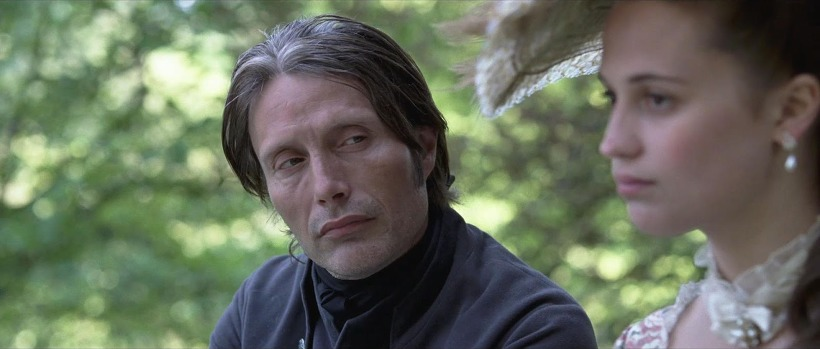
(스트루엔제 : "우리 둘의 개인적인 사랑 불륜이 아니었다면 우리의 개혁은 성공했었을까요 ?" )
스트루엔제의 개혁은 유부녀와 놀아나는 불륜남의 빨갱이 짓에 불과했고, 결국 귀족들이 잘 살아야 일반 서민들도 조금이나마 떨어지는 국물이라도 받아먹으며 연명할 수 있다는 당연한 명제를 거부하는 미치광이 짓이었을까요 ? 스트루엔제가 '난 너희들 편이다'라고 외쳤던 상대인 덴마크 국민들 대다수는 스트루엔제에게 등을 돌렸지요. 스트루엔제가 목이 잘리면서 그런 개혁은 후퇴하는 것이었을까요 ? 글쎄요. 원래 역사의 진보는 한번에 오지는 않는다고 생각해요. 진보 측 인사 몇몇의 과오가 진보의 행진을 막지도 못하고요. 전에 인용했던 에밀 졸라의 명언처럼, "La vérité est en marche et rien ne l'arrêtera" 즉 진실은 전진하고 있고 그 어떤 것도 그를 막을 수는 없으니까요.